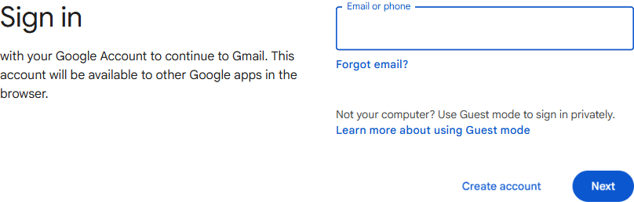
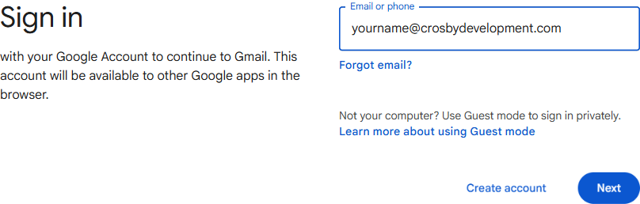
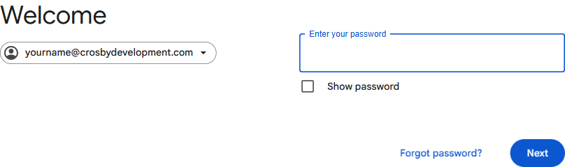

Reading your Crosby email at gmail.com
The simplest, fastest way to access your @crosbydevelopment.com Workspace email on any computer — no app to install, no setup screens. Just sign in.
Why this is our top pick
- Nothing to install. Works in any browser — Chrome, Safari, Edge, Firefox.
- Same company runs both ends. Your email lives on Google's server, so Google's webmail is the most direct fit.
- Always current. No version updates to chase, no settings to break.
- Available everywhere. Same inbox at home, at work, on a friend's laptop.
Signing in
Open a web browser
Click the icon for Chrome, Safari, Edge, or Firefox on your computer. Any of them work.
Go to gmail.com
In the address bar at the top, type gmail.com and press Enter.
Google's sign-in page appears
gmail.com takes you straight to a page that says "Sign in" with a box that says Email or phone. That's where you are now.

Type your Crosby email
In the Email or phone box, type your full address — yourname@crosbydevelopment.com — then click the blue Next button.

Type your password
The next page says "Welcome" and shows your Crosby email at the top-left. Type your Workspace password in the Enter your password box and click Next.

Complete 2FA (if prompted)
If you've set up 2-factor authentication, Google sends a prompt to your phone or asks for a code. Complete it.
You're in
Your inbox loads. New mail comes in instantly; older history is already there since it all lives on Google's servers.
Make it nicer to use
Bookmark gmail.com
Press Ctrl + D (Windows) or ⌘ + D (Mac) to bookmark the page. Now it's one click away.
Pin the tab
Right-click the Gmail tab at the top of your browser and choose Pin Tab. It stays open in a tiny tab forever, even when you close and reopen the browser.
Install Gmail as an app (Chrome / Edge)
In Chrome or Edge, while at gmail.com, click the three-dot menu → Cast, save, and share → Install Gmail…. Gmail now opens like a normal desktop app with its own icon — closest thing to a "Gmail app for Windows / Mac" that exists.
Stay signed in
If it's your own computer, check Stay signed in at the sign-in step. If it's shared, leave it unchecked.
Troubleshooting
| Symptom | Fix |
|---|---|
| "Couldn't find your Google Account" | Check spelling. If it still fails, your Workspace account may not be ready yet — call us. |
| Password rejected | Click Forgot password?, or call us to reset. |
| It signs in but takes me to a different account | Click your profile picture top-right → Add another account → sign in with your Crosby address. |
| Want a Gmail icon on the taskbar/dock | Use the "Install Gmail as an app" tip above (Chrome or Edge). |